Guaymaca, Honduras · Productores desde 1890
Cinco generaciones cultivando el mejor café de Guaymaca. Del grano a la taza, con más de 135 años de pasión y tradición familiar.
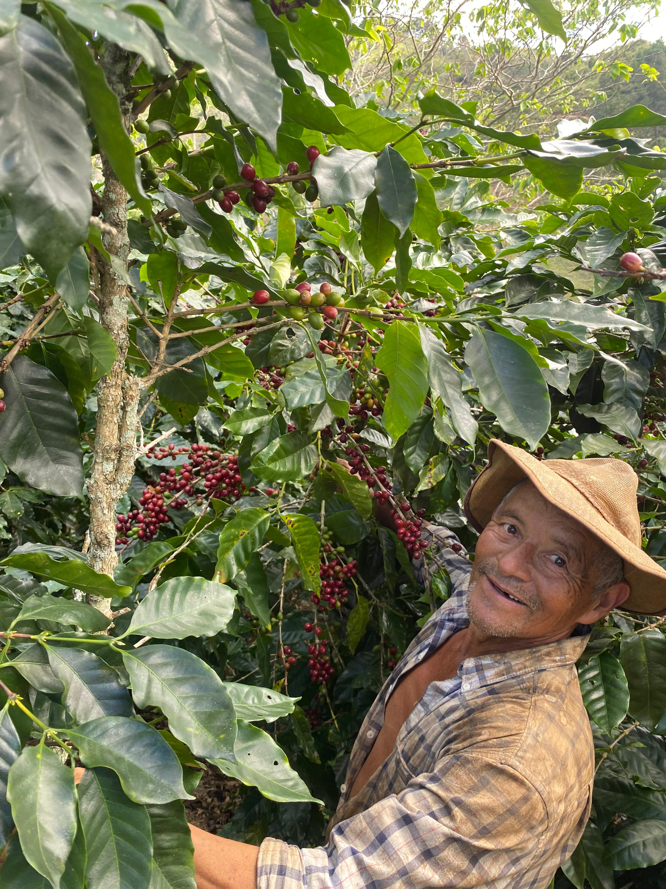
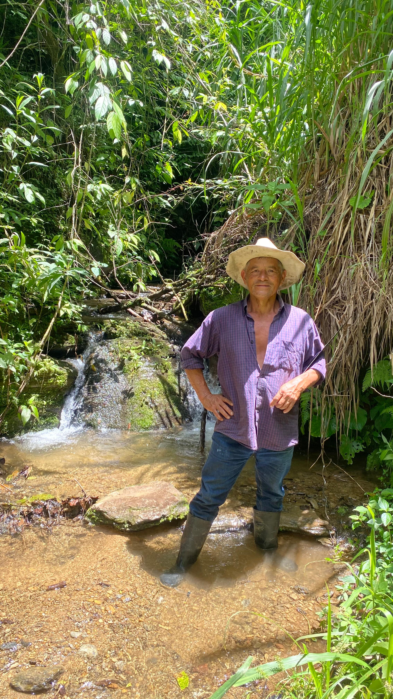
Nuestra historia
En 1890, nuestra familia comenzó a cultivar café en las faldas de las montañas de Guaymaca. Lo que nació como un pequeño cultivo familiar se convirtió en una pasión transmitida de generación en generación.
Hoy, 5ta Café es el resultado de más de 135 años de dedicación al grano: seleccionamos cada cereza a mano, cuidamos cada planta con respeto a la tierra y honramos la tradición de quienes nos precedieron.
Honduras es el quinto productor de café más grande del mundo. Nosotros ponemos el corazón de Guaymaca en cada taza.
Del campo a la taza
Cada etapa está cuidada por manos expertas. La calidad no es un accidente, es el resultado de 135 años de aprendizaje.
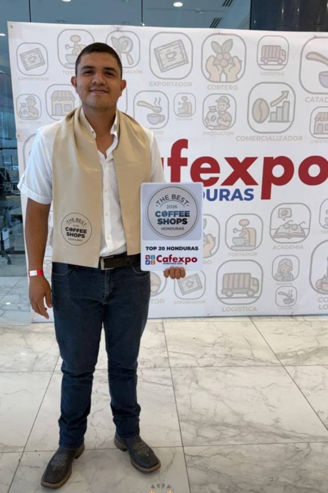
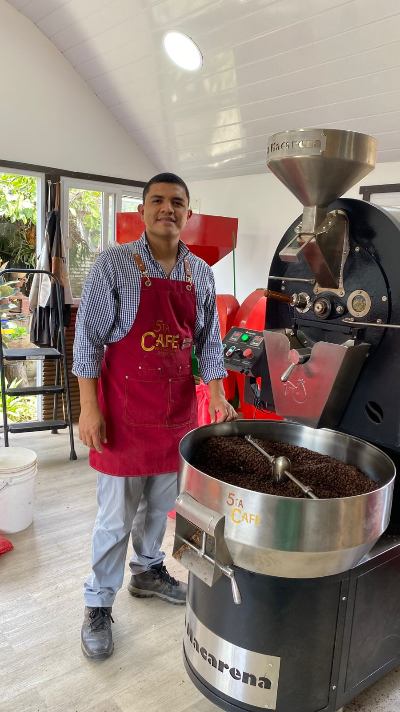
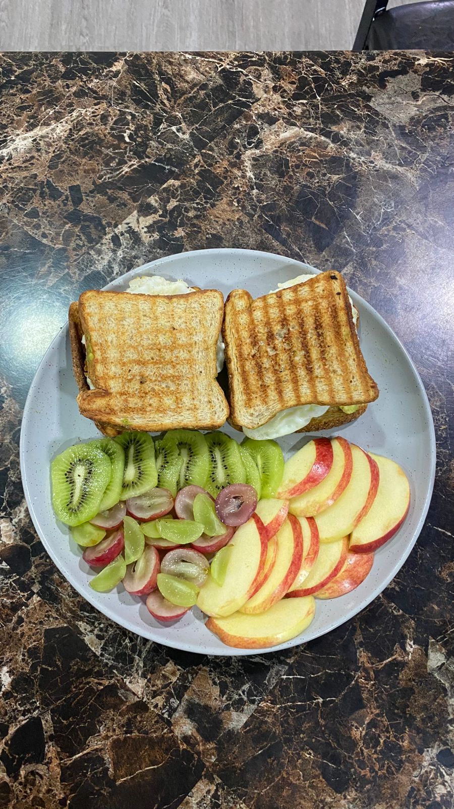
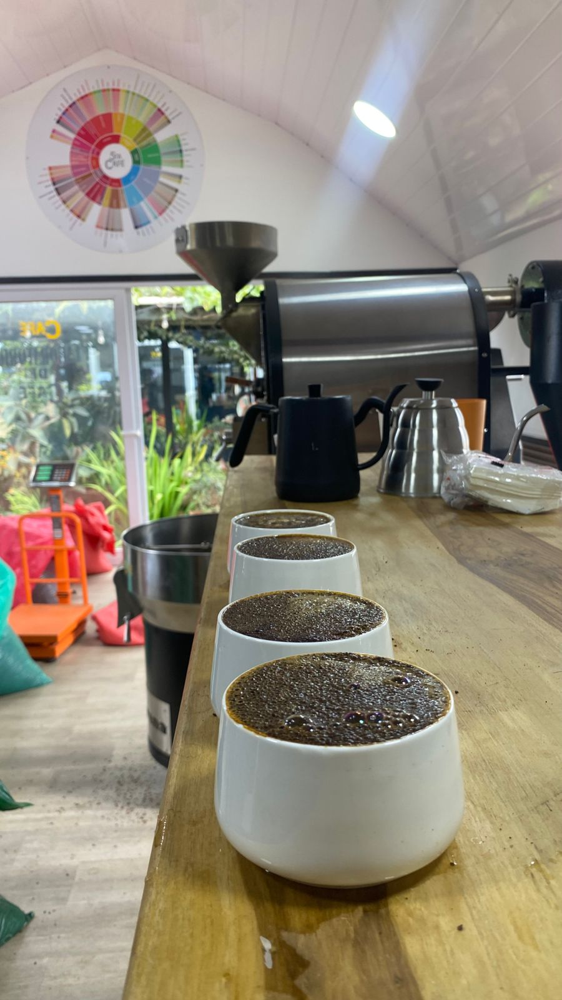
Vida en la finca
Haz clic en cualquier foto para verla en grande.
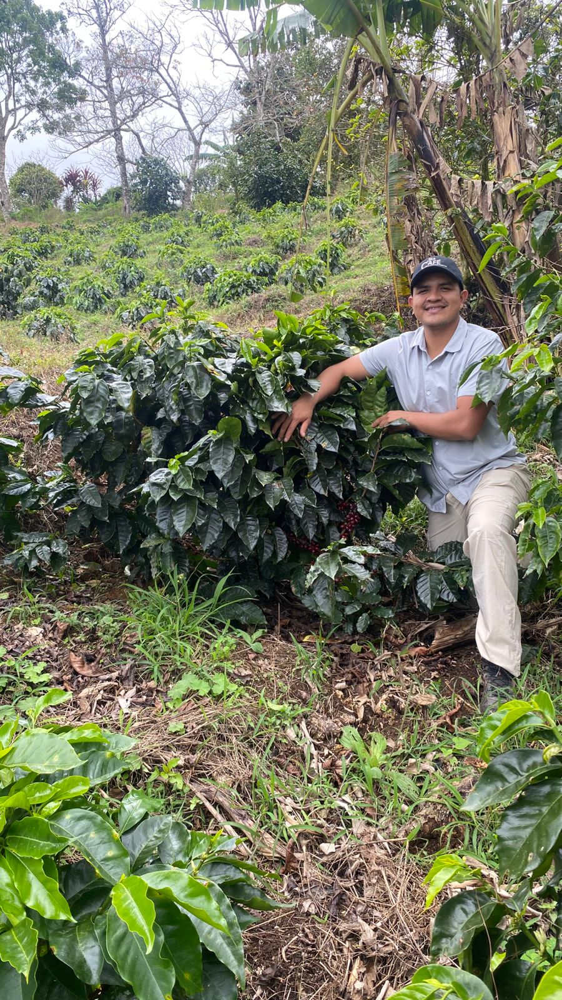
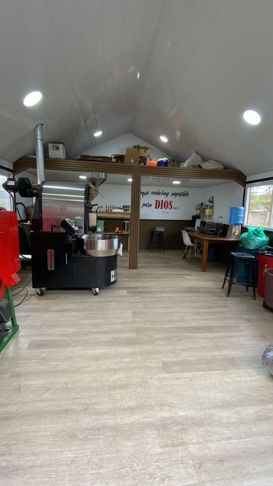
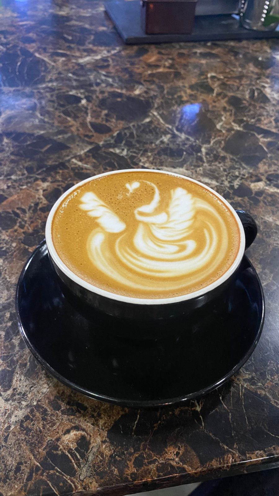
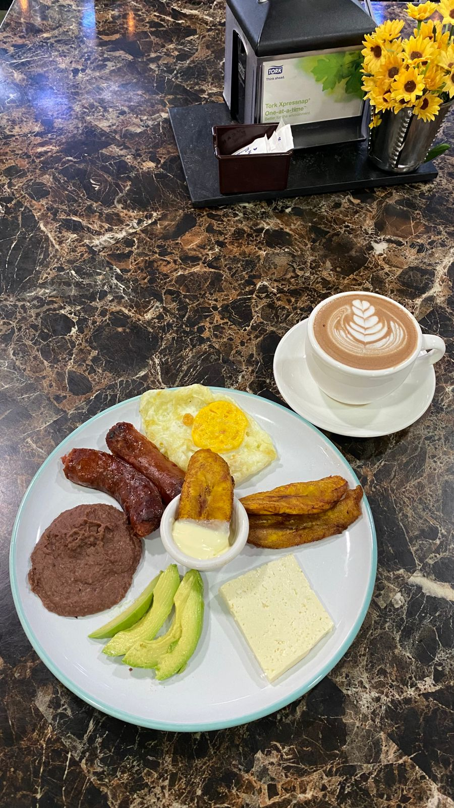
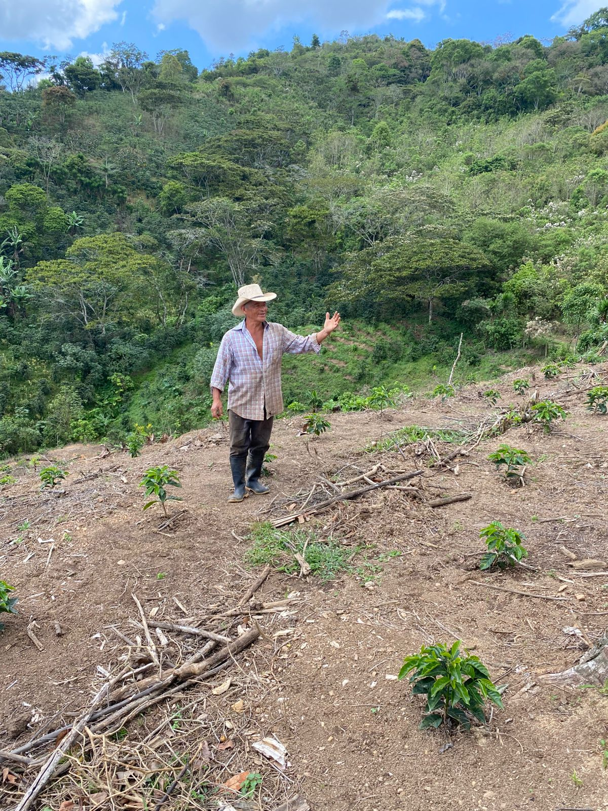
Las personas detrás del café
Cada taza lleva el trabajo de familias que han dedicado su vida entera a la tierra y al grano.
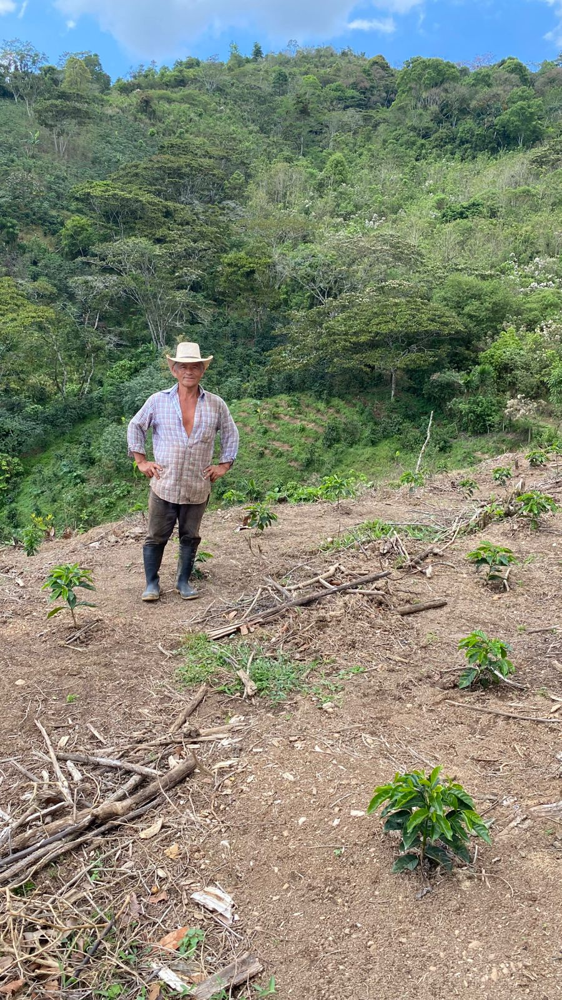
Más de 40 años cosechando café en las alturas de Guaymaca. Conoce cada planta como si fuera un hijo.
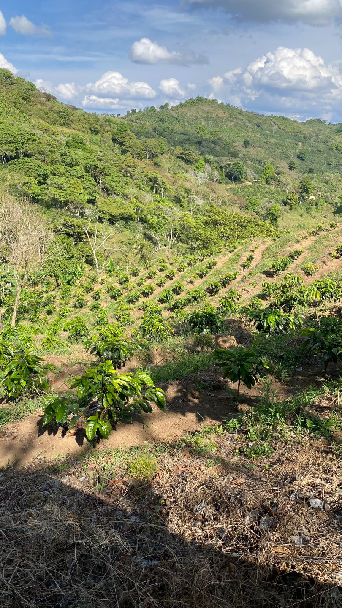
Detrás de cada bolsa de 5ta Café hay una historia familiar. Gente que trabaja la tierra con orgullo genuino.
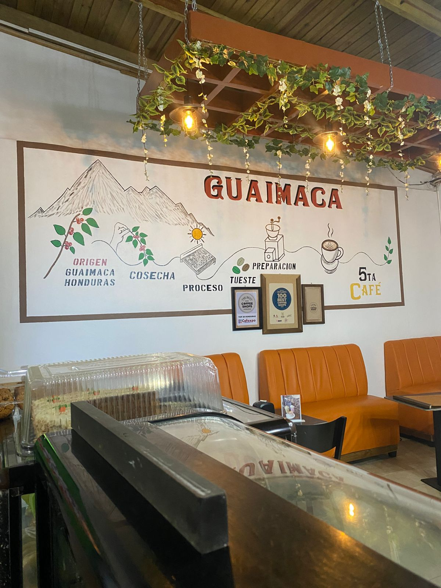
Jóvenes con raíces profundas que combinan la tradición familiar con nuevas técnicas de specialty coffee.
Visítanos
Estamos en el corazón de Guaymaca, Honduras. Ven a conocer la finca, vivir el proceso y tomar una taza de café con vista a la montaña.